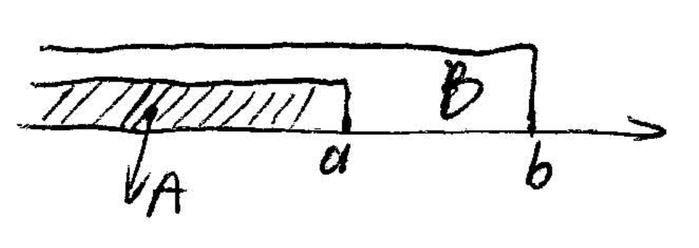

Joint cumulative distribution function (JCDF) of X and Y
F(a,b) = P\{X\leq a, Y \leq b\}, -\infty < a, b < \infty
F_X(a) = P\{X\leq a\} = P\{X\leq a, -\infty < Y < +\infty\} = F(a, \infty) =\lim_{b\to\infty} F(a, b) F_Y(b) = P\{Y\leq b\} = P\{X < \infty,Y \leq b\} = F(\infty, b) =\lim_{a\to\infty} F(a, b)
For example, P\{X > a, Y > b\} = 1 - F_X(a) - F_Y(b) + F(a, b)
\begin{aligned} P\{X > a, Y > b\} &= 1 - P\{X > a, Y > b\}^c\\ &= 1 - P(\{X > a\}^c \cup \{Y > b\}^c)\\ &= 1 - P(\{X \leq a\}) + P (\{Y \leq b\}) - P(\{X \leq a, Y \leq b\})\\ &= 1 - F_X(a) - F_Y(b) + F(a, b) \end{aligned}
P\{a_1 < X \leq a_2, b_1 < Y \leq b_2\} = F(a_2, b_2) - F(a_2, b_1) - F(a_1, b_2) + F(a_1, b_1)
Discrete: Joint probability mass function (JPMF) \begin{aligned} P(x, y) &= P\{X = x, Y=y\}\\ P_X(x) &= P\{X = x\} = \sum_{y: p(x, y) > 0}p(x,y)\\ P_Y(y) &= P\{Y = y\} = \sum_{x: p(x, y) > 0}p(x,y)\\ \end{aligned}
Continuous: X and Y are jointly continuous if there exists a function f(x, y) such that for every set C \subset R^2
P\{(X, Y) \epsilon C\} = \int\int_{(x,y) \epsilon C}f(x,y)dxdy
The function f(x,y) is called the JPDF of X and Y
In the case where C = A\times B,
\begin{aligned} P\{(X, Y)\;\; \epsilon\;\; A\times B\} &= P\{X \epsilon A, Y \epsilon B\}\\ &= \int\int_{x\epsilon A, y\epsilon B}f(x,y)dxdy\\ &= \int_{y\epsilon B}\int_{x\epsilon A}f(x,y)dxdy \end{aligned}
For example, A = (-\infty, a], B = (-\infty, b]
\begin{aligned} F(a, b) = P\{X \leq a, Y \leq b\} &= \int_{-\infty}^{b}\int_{-\infty}^{a}f(x,y)dxdy\\ f(a, b) &= \frac{\partial^2}{\partial a \partial b}F(a, b) \end{aligned}
For B = (-\infty, +\infty), P\{X \epsilon A\} = \int_A\int_{-\infty}^{+\infty}f(x, y)dydx = \int_{-\infty}^{+\infty}\int_Af(x, y)dxdy
Compared with P\{X \epsilon A\} = \int_Af_x(x)dx it follows that \underbrace{f_X(x) = \int_{-\infty}^{\infty}f(x, y)dy}_{\text{marginal PDF}}
Similary, \underbrace{f_Y(y) = \int_{-\infty}^{\infty}f(x, y)dx}_{\text{marginal PDF}}
The last 2 integrals, are called the marginal PDF
In general, Joint Probability distributions for n random variables
F(a_1, a_2, \dots, a_n) = P\{X_1 \leq a_1, X_2 \leq a_2 \dots X_n \leq a_n\}
Continuous, if there exists f(x_1, x_2, \dots x_n) such that P\{(X_1, X_2, \dots, X_n) \epsilon C\}, C \epsilon \R^n = \int\int\dots\int_{(x_1, x_2, \dots x_n)\epsilon C} f_x(x_1, x_2,\dots x_n) dx_1 dx_2 \dots dx_n
The random variables X and Y are said to be independent if for any two sets of real numbers A and B, P\{\underbrace{X \epsilon A}_{E_1}, \underbrace{Y \epsilon B}_{E_2}\} = P\{\underbrace{X \epsilon A}_{E_1}\}\cdot P\{\underbrace{Y \epsilon B}_{E_2}\}
P(E_1E_2) = P(E_1)P(E_2)
Based on the three axioms, we only need to consider A = (-\infty, a], B = (-\infty, b]

That is, P\{X \leq a, Y \leq b\} = P\{X \leq a\}P\{Y \leq b\} for any a, b \epsilon \R
That’s equivalent to say F(a, b) = F_X(a)\cdot F_Y(b)
For discrete case it is equivalent hat P(x, y) = P_X(x)P_Y(y)
For continuous case it is equivalent hat f(x, y) = f_X(x)f_Y(y)
Interpretation: X and Y are independent of knowing the value of one doesn’t change the distribution of the other one
Suppose that X\sim f_X(x), Y\sim f_Y(y) are independent of each other, what is the density of X+Y i.e. f_{X+Y}
\begin{aligned} F_{X+Y}(a) &= P\{X + Y \leq a\} \\ &= \int\int_{x+y \leq a}f(x,y)dxdy\\ &= \int_{-\infty}^{\infty}\int_{-\infty}^{a-y}f(x,y)dxdy \\ &= \int_{-\infty}^{\infty}\int_{-\infty}^{a-y}f_X(x) f_Y(y)dxdy\\ &= \int_{-\infty}^{\infty}f_Y(y)\underbrace{\int_{-\infty}^{a-y}f_X(x) dx}_{P\{X\leq a-y\} = F_X(a-y)}dy\\ \therefore f_{X+Y}(a) &= \int_{-\infty}^{\infty}f_Y(y)f_X(a-y)dy \\ &= f_Y * f_X \sim \text{convolution}\\ &= \int_{-\infty}^{\infty}f_X(x)f_Y(a-y) \end{aligned}
Proposition 3.2 If X_i \sim N(\mu_i, \sigma_i^2), i = 1, 2 \dots n are independent then \sum_{i=1}^nX_i \sim N(\sum_{i=1}^n\mu_i, \sum_{i=1}^n\sigma_i^2)
Proof: Start with a simple case, Let X \sim N(0, \sigma^2), Y \sim N(0, 1) which are independent, using which we use to find f_{X+Y}(a) = \int_{-\infty}^{\infty}f_X(x)f_Y(a-y) which on solving we get f_{X+Y}(a) \sim N(0, 1+\sigma^2)
Now suppose, X_1 \sim (\mu_1, \sigma_1^2), X_2 \sim (\mu_2, \sigma_2^2) which are independent
\begin{aligned} X_1 + X_2 &= \sigma_2(\underbrace{\frac{X_1-\mu_1}{\sigma_2}}_{\sim N(0, (\frac{\sigma_1}{\sigma_2})^2)} + \underbrace{\frac{X_2-\mu_2}{\sigma_2}}_{\sim N(0, 1)}) + \mu_1 + \mu_2\\ \text{Since } & E[\frac{X_1 - \mu_1}{\sigma_2}] = \frac{1}{\sigma_2}(E[X_1] - \mu_1) = 0\\ &Var(\frac{X_1 - \mu_1}{\sigma_2}) = \frac{1}{\sigma_2^2}Var(X_1) = (\frac{\sigma_1}{\sigma_2})^2 \end{aligned}
\begin{aligned} \therefore\frac{X_1-\mu_1}{\sigma_2} + \frac{X_2-\mu_2}{\sigma_2} &\sim N(0, 1 + (\frac{\sigma_1}{\sigma_2})^2)\\ \therefore \;X_1 + X_2 = \sigma_2(\frac{X_1-\mu_1}{\sigma_2} + \frac{X_2-\mu_2}{\sigma_2}) + \mu_1 + \mu_2 &\sim N(\mu_1 + \mu_2, \sigma_1^2 + \sigma_2^2) \end{aligned}
Thus, proposition is established when n=2, the general case now follows by induction. That is, assume that it is true when there are n-1 random variables, and repeat the same steps
If X and Y are independent, then f_{X+Y} = f_X * f_Y
Using Fourier properties, we can say that
f_{X+Y} = \mathcal{F}^{-1}\{\mathcal{F}\{f_X\}\cdot\mathcal{F}\{f_Y\}\}
Recall conditional probability: P(E|F) = \frac{P(EF)}{P(F)}
If X and Y are discrete random variables, conditional PMF of X given Y=y
P_{X|Y}(x|y) = P\{X=x|Y = y\} = \frac{P\{X=x, Y=y\}}{P\{Y=y\}} = \frac{P(x, y)}{P_Y(y)}
We know that P(E|F) = P(E) \Leftrightarrow E and F are independent
Similarly, P_{X|Y}(x|y) = P_X(x) \Leftrightarrow X and Y are independent, which can be easily seen from the fact that if X and Y, \frac{P(x, y)}{P_Y(y)} = \frac{P_X(x)P_Y(y)}{P_Y(y)} = P_X(x)
The conditional CDF of X given that Y=y is defined as F_{X|Y}(x|y) = P\{X\leq x | Y = y\} = \sum_{a \leq x}P\{X = a|Y = y\} = \sum_{a \leq x}P_{X|Y}(a|y)
If X and Y have a joint PDF f(x,y) then the conditional PDF of X, given that Y=y is defined as f_{X|Y}(x|y) = \frac{f(x,y)}{f_Y(y)}
for all values of y such that f_Y(y) > 0
Similar to P(X\epsilon A) = \int_Af_X(x)dx, we have P(X\epsilon| Y=y) = \int_Af_{X|Y}(x|y)dx
In particular, let A = (-\infty, a] then we have the conditional CDF of X
F_{X|Y}(a|y) = P\{X\leq a | Y = y\} = \int_{-\infty}^af_{X|Y}(x|y)dx
If X and Y are independent, f_{X|Y}(x|y) = \frac{f(x,y)}{f_Y(y)} = \frac{f_X(x)f_Y(y)}{f_Y(y)} = f_X(x)